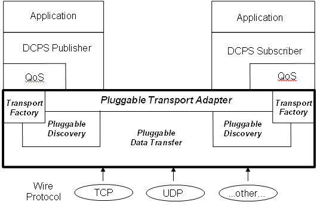

<div id="contenttext">
  <div class="bodytext" align="justify">
    <span class="headertext">What are my Transport Options?</span>
    <p>In much the same way that later CORBA specifications described how different
      ORB implementations should inter-operate (via IIOP) the OMG now has a
      specification to enable interoperability amongst DDS implementations. This
      part of the DDS specification was initially called RTPS or Real Time Publish
      Subscribe. It is now known as DDS Interoperability Protocol (DDSI). This
      wire protocol uses the OMG Common Data Representation (CDR) to encode data
      in a platform-neutral way such that it can be sent over the network. DDS
      implementations can still support multiple transports.
    </p>
    <p><u>OpenDDS supports "one to one" (point to point) and "one to many" (multicast) styles of publishing</u>.</p>

    <p>The hallmark of many real-time publish/subscribe systems is a transport which is very particular
      to the problem domain. Different industries already have existing transports, such as factory automation,
      financial trading systems, defensive systems sensors (sonar, IR, radar), etc. Many of these domains
      have transports combined with a higher level protocol. These legacy systems must be accommodated.</p>

    <p>OpenDDS separates the transport from the higher level protocols by means of an Extensible Transport
      Framework (ETF). The diagram below shows the ETF aspects of the architecture.</p>

    <p> </p>
  </div>

</div>
